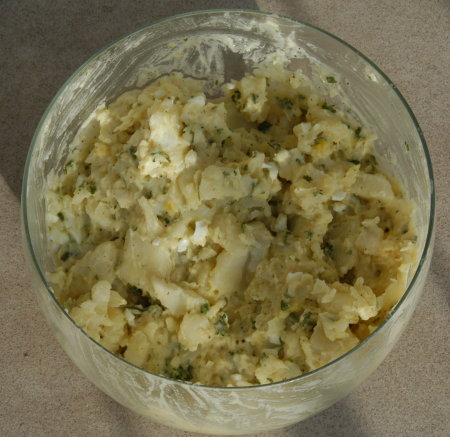

| Zutaten für 6 Personen: | |
| 1.5 kg | Festkochende Kartoffeln |
| 1 Bund | Schnittlauch |
| 1-2 | kleine Zwiebel(n) |
| 2 Esslöffel | Senf |
| 4 Esslöffel | Mayonnaise |
| 4 Teelöffel | Aromat |
| Salatwürzmischung | |
| Pfeffer | |
| 6 Esslöffel | Öl |
| 6 Esslöffel | Essig |
| eventuell 1 dl | Bouillon |
Die Kartoffeln in Salzwasser oder Dampfkochtopf gar kochen.
Eine genug grosse Schüssel parat stellen.
Den Schnittlauch klein schneiden und in die Schüssel geben.
Die Zwiebel klein schneiden, auch in die Schüssel geben.
2 Esslöffel Senf zugeben.
4 gehäufte Esslöffel Mayonnaise zugeben.
4 Kaffeelöffel Aromat zugeben (ja, wirklich!).
Salatgewürz und Pfeffer zugeben.
Öl und Essig zugeben.
Alles gut verrühren.
Die Kartoffeln schälen, in Scheiben schneiden und in die Sauce geben. Gut unterheben aber keinen Brei machen!
Je nach Konsistenz Bouillon zubereiten und zugeben
Super gutes Rezept! RE
Als Beilage an einem Fest Faustregel: 150g pro Person.
Sandra A. hat ein sehr ähnliches Rezept. Sie meint aber es gehört unbedingt Buillon dazu. Immer.